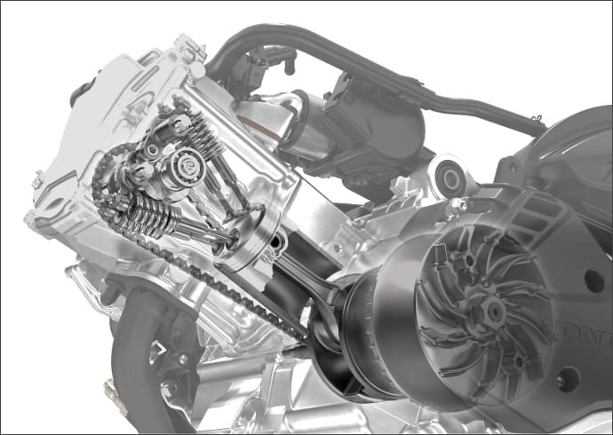
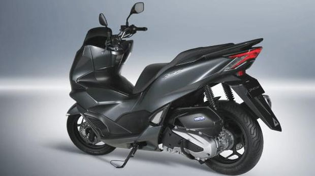
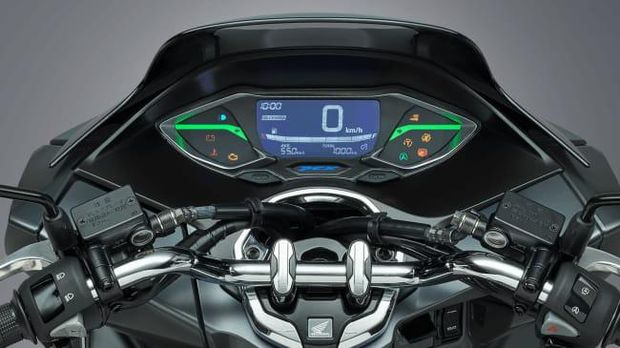

Jakarta - Honda resmi merilis PCX 160. Skutik ini hadir dengan kapasitas mesin lebih besar dan sudah dibekali sistem 4 katup. Performa Honda PCX 160 pun lebih baik dibanding generasi PCX 150.
anpa seremonial peluncuran, Honda memperkenalkan produk skutik terbarunya, Honda PCX 160. Motor ini baru akan dijual resmi mulai 28 Januari 2021 di Vietnam.
Melansir situs Honda Jepang, PCX 160 mengalami peningkatan mesin dari generasi sebelumnya, PCX 150. Honda PCX 160 mengusung mesin SOHC, 1 silinder, 4 katup. Beda dengan pendahulunya yang masih membawa mesin 149 cc, 2 katup.
Berkat peningkatan kapasitas mesin itu, performa Honda PCX 160 pun lebih baik, dengan power maksimum 12 kW pada 8.500 rpm dan torsi puncak 15 Nm di 6.500 rpm. Mesin ini lebih powerfull dari PCX 150 yang punya power 10,8 kW dan torsi 13,2 Nm.
Di atas kertas, mesin PCX 160 tersebut juga lebih bertenaga dari kompetitornya, Yamaha Nmax Connected yang dibekali mesin 155 cc, dengan output tenaga 11,3 kW di 8.000 rpm dan torsi 13,9 Nm pada 6.500 rpm. Tapi menjadi catatan, mesin Nmax sudah dibekali sistem katup variabel alias VVA.
Dari sisi fitur, Honda PCX 160 hadir dengan sistem pengereman disc brake (cakram) depan dan belakang, serta dilengkapi fitur Anti-lock Braking Sistem (ABS) single channel di depan saja.
Skutik ini juga sudah dibekali fitur kontrol traksi HSTC (Honda Selectable Torque Control) seperti di Honda Forza. Tak ketinggalan ada pula fitur soket USB untuk mengisi ulang daya gadget.
Sementara jika bicara desain, Honda PCX 160mirip dengan Honda PCX 125 terbaru yang beberapa waktu lalu rilis di Eropa. Desain fascia-nya dibuat lebih agresif dengan dukungan LED dan DRL. Bentuk lampu belakang pun tak kalah tajam, dengan siluet huruf 'X' saat lampu rem menyala.
Honda PCX 160 hadir dengan 4 pilihan warna, yakni Pearl Jasmine White, Candy Raster Red, Poseidon Black Metallic, dan Matte Grey Metallic. Di Jepang, Honda PCX 160 dibanderol dengan harga 407.000 yen atau setara Rp 55,1 juta.
